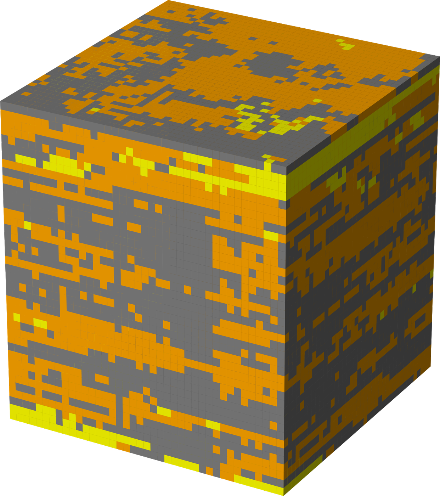
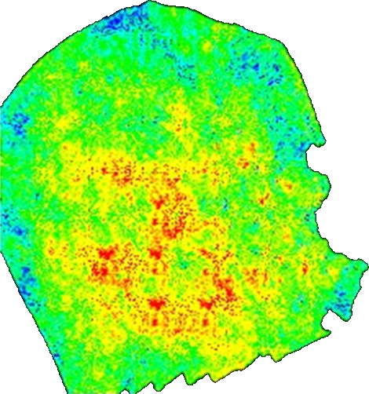
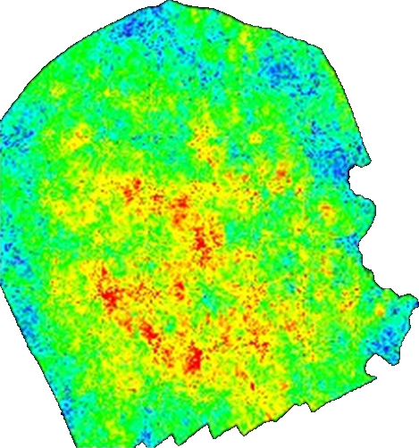
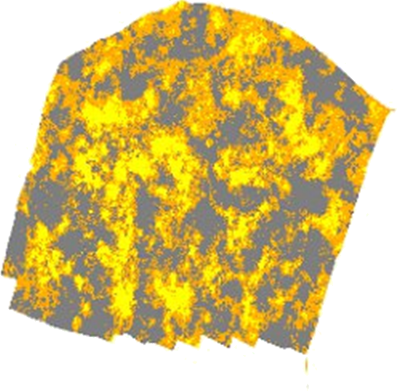
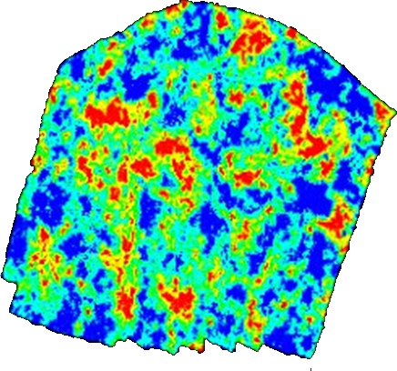
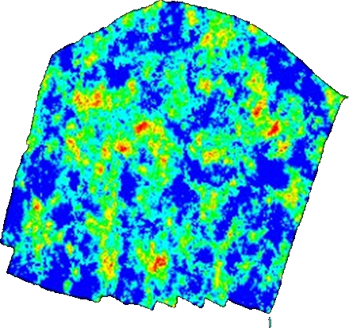
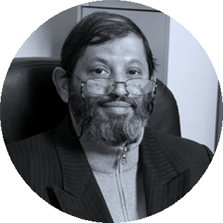

Reservoir property models in hours, not days.
GeoPix learns how geological facies relate to petrophysical properties, then generates porosity, permeability and water saturation maps directly from a facies model. In validation with a national oil company, static modeling went from two to five days down to under two hours.



Property prediction treated as image translation
Building a static model is slow and manual, and preserving spatial continuity across a heterogeneous reservoir is the hardest part of it. GeoPix learns the mapping between properties from models you have already built, then applies it.
The generator is a U-Net: an encoder-decoder with skip connections, so spatial detail survives rather than being averaged away at the bottleneck. The discriminator is a PatchGAN, judging realism patch by patch instead of over the whole image, which forces plausible local texture as well as correct global structure. The same framework fills masked regions of a property grid from the surrounding geology.



Published benchmarks, not projections
Measured on the Groningen dataset and reported in Geoenergy Science and Engineering.
| Translation task | PA | mPA | mIoU | FWIoU |
|---|---|---|---|---|
| Facies → Porosity | 0.58 | 0.58 | 0.39 | 0.41 |
| Porosity → Facies | 0.94 | 0.40 | 0.34 | 0.91 |
| Facies → Permeability | 0.70 | 0.47 | 0.36 | 0.56 |
| Facies → Water saturation | 0.98 | 0.33 | 0.33 | 0.97 |
PA is pixel accuracy, mPA mean pixel accuracy, mIoU mean intersection over union, FWIoU frequency-weighted IoU. The gap between PA and mPA reflects class imbalance: dominant facies are predicted more reliably than rare ones, so results on thin or uncommon units need checking against well control. Facies → Porosity is the most balanced task and the hardest.
Against the workflow you run now
For one property across a gridded reservoir model, measured during validation with a national oil company.
| Conventional workflow | With GeoPix | |
|---|---|---|
| Time per property | 2–5 days | Under 2 hours |
| Interpreter input | Continuous | Set-up and review |
| Repeat for a second property | Repeat the cycle | Re-run the model |
| Reproducible from the same inputs | Depends on the interpreter | Deterministic |
| Handles a property that is missing entirely | Geostatistical infill | Reconstructed from surrounding geology |
GeoPix does not replace the interpreter. It removes the repetitive part of the cycle so the time goes into judging the result instead of producing it. Outputs still need checking against well control, particularly on thin or uncommon units.
What we offer today
Stated plainly, because a technical evaluator finds out either way.
-
Available
Benchmarking on your reservoir
We run the method against your existing geomodeling workflow on your own gridded data, under NDA, and report where it holds and where it does not.
-
Available
Pix2Geomodel implementation
Trained models for facies-to-property and property-to-facies translation, plus masked reconstruction, with the published benchmarks reproducible from open code.
-
In development
Batch inference and workflow tooling
Preprocessing, batch processing and integration for teams running this across many models.
-
In development
Geothermal and CO₂ storage
Extending the framework beyond hydrocarbon reservoirs.
How an engagement runs
Four weeks from your model to a report you can act on. No licence to buy before you know whether it works.
-
Week 1
NDA and data handover
You send a gridded model with at least two properties. Facies plus porosity is the usual starting point. Data stays in your environment if that is a requirement.
-
Week 2
Training on your reservoir
We fit the model to your field rather than applying a generic one, and hold out a region you choose as a blind test.
-
Week 3
Blind comparison
Generated properties against your held-out ground truth, scored with the same metrics we publish, zone by zone.
-
Week 4
Report and the honest verdict
Where it matched, where it did not, and whether it is worth putting into your workflow. If the answer is no, we say so.
Who builds it
Abdulrahman Al-Fakih
PhD geophysics, KFUPM. Created the Pix2Geomodel method and led its validation with a national oil company, cutting static modeling from days to under two hours. Co-PI on subsurface AI research. Previously a reservoir, wireline and production engineer on producing fields in Yemen.
Nabil Saraih
Ten years in petroleum geoscience. Built integrated static and dynamic reservoir models at TOTAL Energies, and worked as a geoscientist and software engineer at Schlumberger. PhD geology, KFUPM. Works daily in Petrel, Techlog, Petromod and Eclipse.
Ardiansyah Koeshidayatullah
Associate Professor at KFUPM and former Stanford postdoctoral fellow. Leads the PREDICT group on AI in geosciences. Associate Editor, JGR: Machine Learning and Computation.

SanLinn I. Kaka
Associate Professor at KFUPM, PhD Carleton. Twenty years in reservoir characterization and monitoring, microseismic analysis, and AI applications in geophysics.
Developed through research collaborations with KFUPM, the SDAIA–KFUPM Joint Research Center for AI, Stanford University, and a national oil company.
Where we are
- 2023First machine-learning reservoir property prediction published, IEEE Access
- 2024Pix2Geomodel development begins with a national oil company
- 2025Patent application filed
- Mar 2025Sequence-based GANs for well log generation published, Scientific Reports
- Dec 2025Validation complete: static modeling cycle cut from days to under two hours
- 2026Pix2Geomodel published, Geoenergy Science and Engineering
- Oct 2026Selected for the Deep-Tech Ventures Program at Dhahran Techno Valley, from more than 230 applications
Everything here is checkable
-
Geoenergy Science and Engineering, 2026Pix2Geomodel: a next-generation reservoir geomodeling with property-to-property translation. doi.org/10.1016/j.geoen.2025.214342
-
Scientific Reports, 2025Well log data generation and imputation using sequence based generative adversarial networks. doi.org/10.1038/s41598-025-95709-0
-
Applied Computing and Geosciences, 2026Enhanced anomaly detection in well log data through the application of ensemble GANs. doi.org/10.1016/j.acags.2025.100316
Bring us a reservoir
If you are assessing whether generative models fit your geomodeling workflow, send us a model and we will benchmark the method against it under NDA. We will tell you where it works and where it does not.
contact@geopix-ai.com